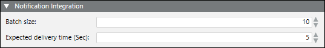

Drivers
Notification communicates with all devices through drivers. The system starts with no drivers or networks. You need to add the drivers as required and then associated them to field network to add devices.
Driver instances can either run on the Desigo CC server or on the Front-End Processor (FEP) when load balancing or specialized network topologies are required.
Drivers themselves are configurable with message batch sizes. You can start and stop the drivers.
Driver Editor
You can create the drivers from Project > Management System > Servers > Main Server > Drivers, when you click New  and select a driver from the list of drivers that display.
and select a driver from the list of drivers that display.
Once created, you can configure the driver settings in the Driver Editor tab.
The Driver Editor tab has following expanders:
- Notification Integration Expander: Allows to configure a particular device.
- Batch Size: Contains the number of devices that Notification interacts with in one instant. For example, if there are 100 devices on which a message has to be displayed and a batch size of 10 is entered, Notification will send the message to batches of 10 devices each.
- Expected delivery Time: Contains the time span in seconds within which the message needs to be delivered after the message is launched.
